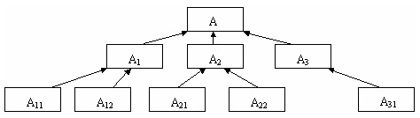
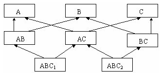
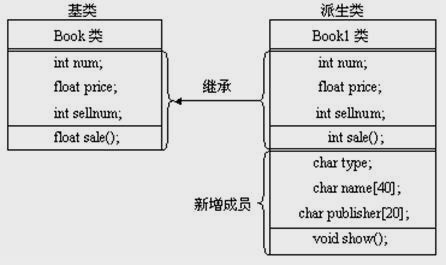

所谓继承，就是在一个已有类的基础上建立一个新类，已有的类称为“基类”或“父类”，新建立的类称为“派生类”或“子类”。
如果一个派生类只从一个基类派生，称为单继承；如果一个派生类从多个基类派生，称为多重继承。
单继承

多重继承

class 派生类名 ：[继承方式] 基类名
{
派生类新增加的成员声明;
};
例如：
class Book //定义基类Book
{ private:
int num; //书号
float price; //定价
int sellnum; //销售量
public:
float sale() //计算销售额
{ return price*sellnum; }
};
class Book1:public Book //定义派生类Book1
{ private:
char type; //定义图书类别，新增加的数据成员
char name[40]; //书名，新增加的数据成员
char publisher[20]; //出版社，新增加的数据成员
public:
void show() //显示图书信息，新增加的成员函数
{ cout<<"type:"<<type<<endl;
cout<<"name:"<<name<<endl;
cout<<"publisher:"<<publisher<<endl;
}
};
派生类中的成员包括两部分，一部分是从基类继承过来的成员，一部分是在声明派生类时新增加的成员，每一部分均包括数据成员和成员函数。
Book类和Book1类之间的继承关系
